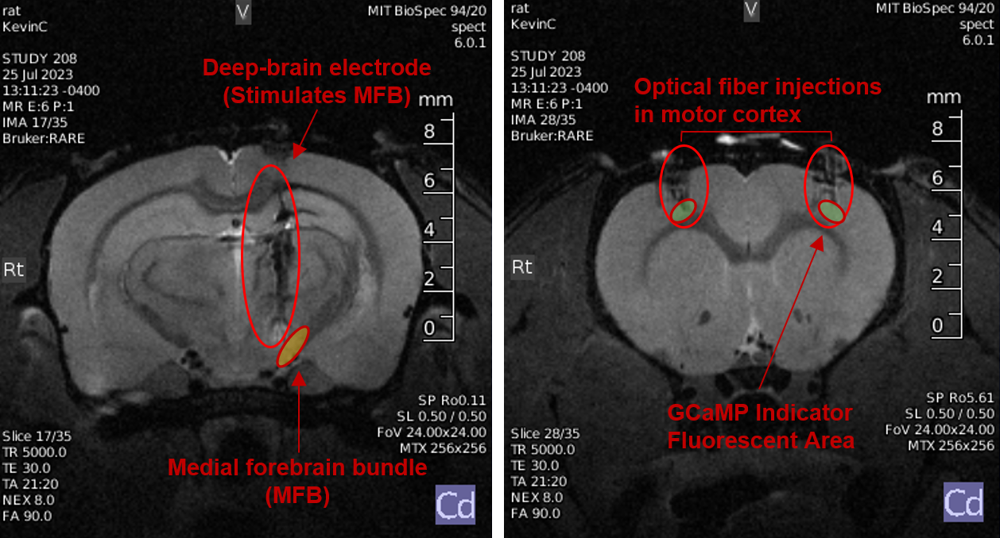
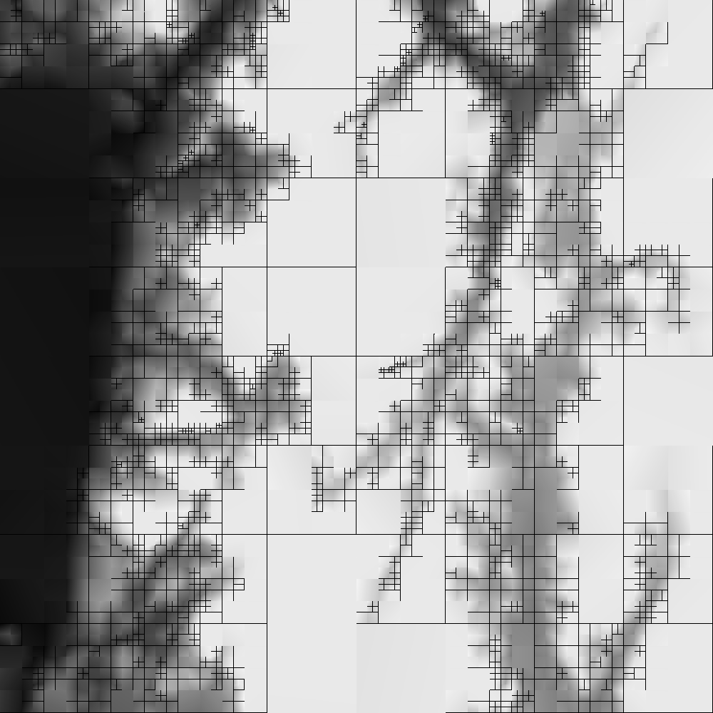
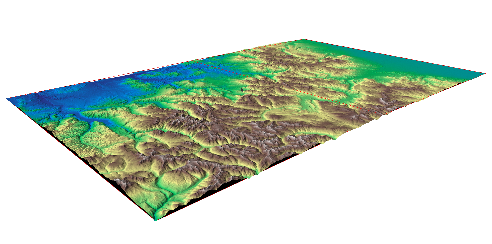
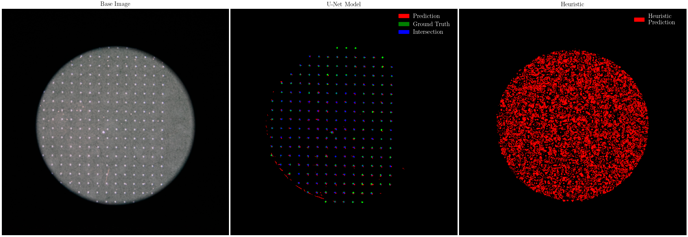

Research
The Limits of Our Brains: How Feedback Can Influence Behavior on a Cellular Scale
READ THE PAPER
a feature-generalizable technique for neural conditioning

It is not surprising to anyone that our brains are capable of tremendous change. Indeed, our neural
plasticity is the attribute
that allows us to adapt to our world every day, learn new skills, and form memories.
Neurophysiologically,
this happens with modulation
of the potentiation of synapses, the information transfer mechanism in our brains. Our brain does a
pretty
good job of regulating this
itself, but mental illnesses such as depression and PTSD, as well as neurodegeneration caused by
strokes
and seizures still fails to be treated by our own brains. What, then, if researchers, scientists, and
doctors
had the power to manipulate this potentiation externally?
Neurofeedback, a technique involving observation and reward of signals produced by the brain, can be
applied to
microscopic groups of cells to reinforce desirable behavior, and in such reinforce the potentiation of
the
synapses
used to produce the signal. Specifically we used calcium ion imagining of a small group of cells in
the
motor cortex,
and a deep brain electrode that stimulates the central dopaminergic pathway of the rat brain. This
study
anticipates the rapidly improving capabilities of this technique by establishing techniques to encode
complex signals
over larger neuron groups. Applied over a large region, this technique has the ability to have
theraputic
potential for neurodegenetative diseases and mental illnesses.
Shrinking the World with Data Compression
READ THE PAPER
geospatial compression through quad-tree raster decomposition


Picture a self-driving car navigating through a bustling cityscape, drones buzzing over a field to
monitor crop health, or robots moving with precision in a busy warehouse. What's the common thread
tying
all these scenes of the near-future together? It's LiDAR, the technology that lets machines see the
world in 3D. But there's a snag: LiDAR creates huge piles of data that our current tech struggles to
handle. That's where General Purpose Geospatial Compression (GPGC) comes
into play.
GPGC is an algorithm developed to improve the accessibility of large-scale LiDAR elevation maps by
reducing its size by 20-200 times, while maintaining almost all of the
detail of the environment. More than this, it makes promises about data integrity that comparable
algorithms cannot, making it suitable for use cases where serious errors cannot be tolerated, such as
in
autonomous vehicles or aircraft avionics. This algorithm does the heavy lifting so autonomous systems
can make split-second decisions without breaking a sweat.
GPGC is fully open-source and designed for interchange with other geospatial utilities. Currently it
is
in use with certain NASA systems provided through the Vehicle Autonomy and Intelligence Lab (VAIL),
powering the next generation of autonomous systems on the ground and in the air.
Bad AI Teaching Badly Trains Better AIs
READ THE PAPER
underfitting heuristic segmentation models for superior neural results

Machine learning usage for simple tasks is often inhibited by the expense and difficulty of assembling
a
high-quality dataset
to train a model. ML as a field has followed a consistent paradigm of devoting extensive effort to
curating a reliable, robust, and
extensive dataset to train a model on. Much of the time this dataset is more interesting than the
model
itself, and certainly more expensive and time consuming to create!
Some recent work has showed that AI models can teach others by partially generating the data set or
evaluating
learning. Yet, there still must be something to teach the teacher. Wouldn't it be nice if we could
manually
guide the AI model in the right direction by hand, but let it mostly optimize itself? I generated a
simple heuristic,
that is, an algorithm not relying on machine learning, that is able to identify small scratches and
spots in chemical films.
However, this model does a terrible job. It overreports the quality of defects by, often, more than
100%!. What's more,
it suffers all sorts of weird behavior along edges, and is over sensitive to changes in lighting.
Surprisingly enough, this
heuristic is able to train a vastly superior neural segmentation model. That phenomenon is
investigated
more broadly in this paper.
|